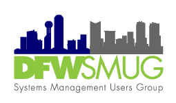

DFWSMUG
Dallas/Fort Worth Systems Management User Group
DFWSMUG: Celebrating Our Legacy in Systems Management
For more than a decade, the Dallas–Fort Worth Systems Management User Group (DFWSMUG) has been a hub for IT professionals across North Texas — a place where systems administrators, engineers, and architects came together to share knowledge, sharpen skills, and build friendships grounded in technology and trust.
From our early gatherings focused on Microsoft SMS and SCCM to our deep dives into Intune, Endpoint Manager, and modern cloud management, DFWSMUG has always been driven by a simple goal: to help one another stay curious, stay current, and stay connected.
Signature Moments
Throughout the years, we’ve hosted hundreds of sessions that turned into real fixes on Monday mornings — practical, peer-to-peer, and generous. Some highlights include:
- “Day After SCU 2015 — DFWSMUG” with Wally Mead, Cris Ross, Maarten Goet, Dieter Wijckmans, and Ronny de Jong.
- 2016: Wally Mead’s return with a packed room for a classic ConfigMgr update talk.
- 2019: Lineups featuring John Joyner and Steve Buchanan.
- 2022: Azure Arc at Microsoft Las Colinas MTC with John Joyner.
- 2023: Winter Meeting with Marc Graham, Donnie Taylor, Cameron Fuller, and Kris Turner (sponsored by CTGlobal).
- 2024: MMS recap with Patch My PC & BeQuisitive, and the full-day “Stroopwafel Edition” at the MTC with Mark Scholman, Maarten Goet, Michael Cassady, and Paul Byrd.
Community Partners
Our success was amplified by incredible partners: the Microsoft Technology Center (Las Colinas/Irving) hosted countless nights; support from Invoke LLC, CTGlobal, SquaredUp, Patch My PC, BeQuisitive, and Lakeside Software; and memorable meals from Hard 8 BBQ and Shipley Donuts.
Favorite Memories
- The SCU era energy — “day after” sessions where jet-lagged experts still showed up and delivered.
- “It worked on my laptop” demos that eventually did work — thanks to someone in the audience who knew the one checkbox.
- Newcomers grabbing the mic for lightning talks — and coming back as headliners later.
Throughout the years, we’ve hosted hundreds of sessions, featuring:
- Presentations from industry experts, Microsoft engineers, and passionate community members.
- Technical deep dives that turned into late-night conversations about strategy and architecture.
- Partnerships with System Center Universe (SCU), local sponsors, and regional user groups that amplified our reach and impact.
- Friendships that turned professional collaboration into lifelong camaraderie.
DFWSMUG wasn’t just a meeting — it was a community of problem-solvers. Whether you came to learn a new deployment trick, to share your automation scripts, or just to talk shop over pizza and coffee, you made this group what it was.
As technology and careers evolve, the leadership team has decided that the time has come to formally close this chapter. But this isn’t a goodbye to the spirit of DFWSMUG — it’s a recognition that our collective work lives on in the networks, friendships, and knowledge we built together.
We want to thank everyone who contributed — every speaker, sponsor, and member who gave their time, energy, and expertise.
Your passion made DFWSMUG one of the most respected and enduring user groups in the Microsoft management community.
From the very first meetup to the final event, one truth remained constant: we did this together.
And that legacy will continue wherever DFWSMUG members go next.
With gratitude and pride,
—The DFWSMUG Leadership Team
DFWSMUG: Dallas–Fort Worth Systems Management User Group
Sharing knowledge, building community, and managing systems — together.